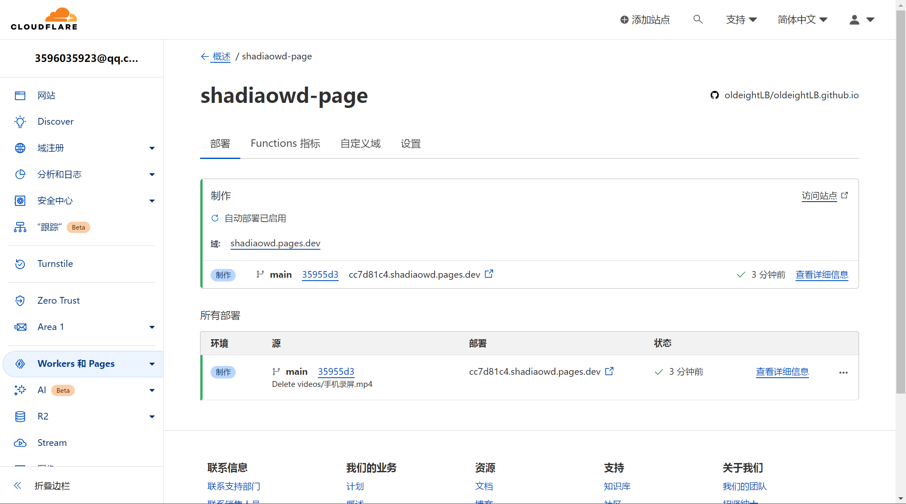

← 返回首页
# 更快了！已全面部署 cloudflare pages！ <font color='#bcbcbc' size="0.8">2024/1/5 更新 </font> 以前，我的网站使用的是 github pages， 这个在国内是真的网速极快，高达 10kb/s， 我自己都忍受不了！！！ 于是，我就： </img> 没错，cloudflare pages！ </img> 速度更快！（但是还是有点慢） 妈妈再也不用担心图片打不开了！！ 从此，全面替换原页面，但是原页面仍然可以正常访问，并且持续更新和部署。
评论区
评论区